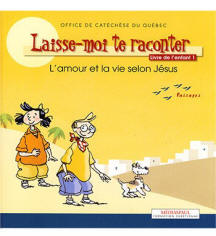
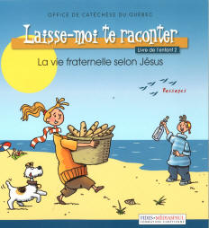
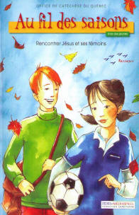
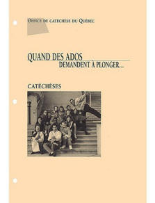

Inscriptions pour les parcours catéchétiques 2020-2021
Chers parents, si vous résidez sur l'un des territoires des paroisses suivantes:
Saint-Pie-X, Saint-Martin, Saint-Maxime
et anciennement Saint-Urbain et Saint Norbert,
c'est le temps de penser à inscrire votre jeune pour les parcours catéchétiques.
Compte tenu de la situation liée à la Covid-19, les inscriptions se feront essentiellement
sur rendez-vous. Pour avoir votre rendez-vous, veuillez nous contacter par téléphone dès
- Débuter au moins la 2e année scolaire
- Fournir l'original du certificat de baptême de votre jeune si celui-ci a été baptisé à
l'extérieur de l'une des paroisses mentionnées plus haut;
- Payez les frais de 50$/enfant, pour couvrir les charges liées au matériel utilisé durant l’année.
Compte tenu de la situation liée à la Covid-19, les inscriptions se feront essentiellement
sur rendez-vous. Pour avoir votre rendez-vous, veuillez nous contacter par téléphone dès
le mardi 1er septembre aux heures du bureau, sinon vous pouvez laisser un message
vocal avec votre nom et vos coordonnées.
S.V.P. Passez le message aux jeunes familles autour de chez vous.
Pour plus de renseignements, contactez:
Contact #1
(450) 682-5515
église Saint-Martin
Contact #2
(450) 682-5515
église Saint-Martin
Vous pouvez nous rejoindre uniquement par
par téléphone 450 682-5515
ou par courriel:
secretariat@unitestmartin.com
Description du parcours sur 5 années de catéchèses
Laisse-moi te raconter 1
Laisse-moi te raconter 2
Au fil des saisons
L’Amour en fête
Laisse-moi te raconter 1 : L’amour et la vie selon Jésus

Nous découvrirons des secrets sur Dieu et Jésus. Il y a des Paroles que l’on n’oubliera jamais. Elles me disent que je ne suis pas tout seul.
Laisse-moi te raconter 2 : La vie fraternelle selon Jésus

En suivant Jésus sur les chemins de son pays, nous découvrirons que la fraternité est l’une des merveilles du monde.
Au fil des saisons : Rencontrer Jésus et ses témoins

Dans une vie, il arrive toutes sortes d’événements, heureux et malheureux. Nous découvrirons des choses bien spéciales. Nous apprendrons que les rituels existent aussi chez les chrétiens.
En marche vers la Confirmation
Vivre en harmonie avec les autres n'est pas toujours facile. Qu'est-ce que Jésus nous dit à travers les Évangiles pour nous aider à solutionner nos difficultés ? Se préparer à la Confirmation, c'est accepter de marcher avec Dieu, de l'écouter, d'entrer en dialogue avec Lui par la prière. C'est aussi prendre le temps de comprendre le rôle de l'Esprit Saint qui nous donne la force de vivre en bon chrétien.
Parcours Jeunes-Ados (10-12 ans)
C’est un parcours pour des jeunes de 10-12 ans qui n’ont jamais fait de catéchèses. Nous découvrirons la vie de quelques personnages marquants de l’Ancien et du Nouveau Testament, la vie et la mission de Jésus.
Quand les ados demandent à plonger. Pour les 12 à 17 ans

À leur façon, les adolescents et les adolescentes, ont un intérêt particulier sur la quête de sens. Ils aiment se retrouver en groupe pour partager sur des sujets bien particuliers, la vie, l'amour, la mort, la recherche de Dieu. Les ados sont invités à réfléchir sur leurs préoccupations, leur culture et sur d'autres sujets qui leur seront proposés. Suite à ces échanges, ils peuvent avoir le goût de vivre une démarche d'approfondissement spirituel, afin de mieux connaître Jésus Christ et son Évangile. Pour que les rencontres soient profitables et agréables, nous misons sur l'honnêteté, la franchise, le respect de soi et de l'autre, le savoir écouter.
Les jeunes peuvent commencer leurs parcours à partir de 7 ans.
Quand mon enfant pourra-t-il communier et être confirmé ?
Nous proposons un cheminement qui s’échelonne sur 5 ans.
Au cours de la 2e année de ce cheminement nous proposerons le sacrement du Pardon aux enfants qui désireront le vivre.
C’est au cours de l’année suivante, la 3e, que le sacrement de l’Eucharistie, communément appelé Première communion sera proposé à votre enfant.
À la suite de ce cheminement, votre enfant pourra choisir de poursuivre son cheminement vers la confirmation qui se vit habituellement au cours de la 5e année de parcours.
Quelle différence y a-t-il entre les parcours catéchétiques et les rencontres de préparation aux sacrements?
Il faut bien comprendre que les parcours catéchétiques ne sont pas des rencontres de préparation aux sacrements. C’est plutôt un endroit où votre enfant apprend, par des activités, à connaître Jésus et à vivre selon les valeurs chrétiennes. C’est grâce à ce cheminement qu’il pourra voir dans sa vie l’importance des sacrements.
Soyez attentifs aux documents que vos enfants vous rapporteront, c’est par eux que vous serez informés du moment des préparations sacramentelles et des dates de première communion ou confirmation.
Pourquoi les enfants doivent-ils suivre des parcours catéchétiques s’ils veulent vivre les sacrements?
Avec l’application de la loi 118, l’école n’a plus la possibilité de former des croyants et des croyantes. Elle fera de l’enseignement religieux culturel. Il revient donc à la famille, en collaboration avec la communauté paroissiale catholique, d’assumer maintenant le rôle essentiel de transmettre la foi. Le diocèse de Montréal a demandé aux communautés chrétiennes d’offrir des parcours catéchétiques pour soutenir les parents dans cette tâche.
Pour être en mesure de vivre les sacrements du Pardon, de l’Eucharistie et de la Confirmation votre enfant doit apprendre à connaître Jésus, ses enseignements, ainsi que les grandes valeurs chrétiennes. Il doit découvrir si tout cela a un sens pour lui. Voici la raison d’être des parcours catéchétiques.